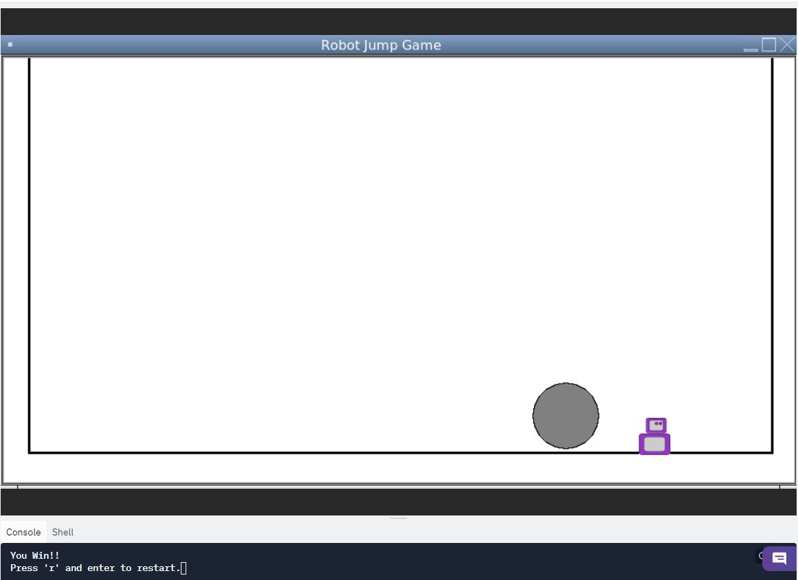
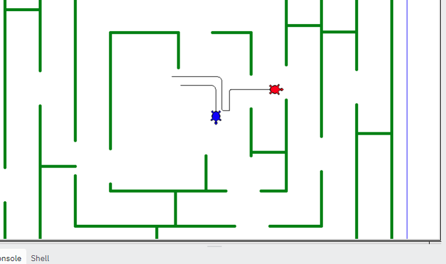
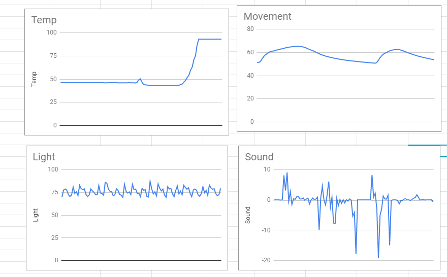
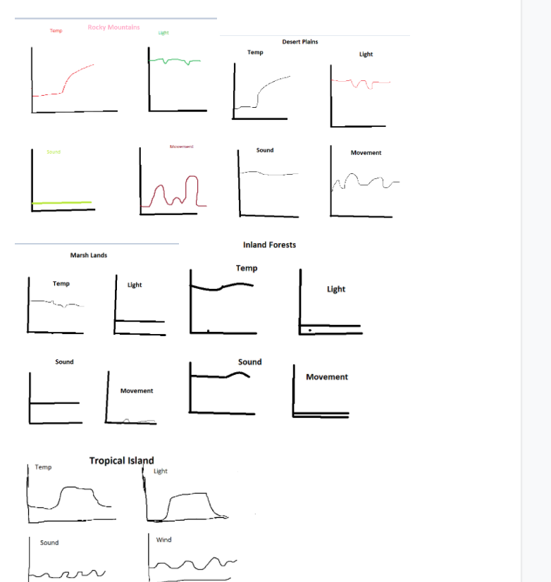

Home
Portfolio
About Me
This is my Portfolio Page!
My name is Brandon Day and I am in AP computer Science principles.
Robot Jump Game

We created this robot jump game using python and turtle. In the game you are the robot and your objective is to use the a and d keys to move left/right and the space key to jump over the boulders and make it saftley to the end. Once you get to the end there a a message telling you that you win but if you don't make it the robots position resets and you try again.
Turtle Racer Game

This is our turtle racer game. In the game there are two players that race each other through a randomly generated maze and the first player that gets out of the maze wins.
Riccardo the Octopus

In our game Riccardo the Octopus tries to escape the pollution in his home the ocean. He has to navigate through many different obstacles before finally makeing it to the safe unpolluted water.



We first looked at the temperature graph and saw that it was constant and had a higher slope later on in the graph. We paired that with either the Rocky Mountains or Desert Plains because they have a constant temperature with a quick rise in temperature in the afternoon. The light graph is wavering and has small dips which could represent the occasional clouds that the Rocky Mountains have. In addition, the low howls of the wind could be why the sound goes into the negatives. The constant line of the graph of Movement varies with intensity as it wavers slightly.
Using App Inventor to make app game Duck Hunter.
Interactive Fiction Rags to Riches.
Black Jack game written in Python.
Modified bits in pictures.
Use data files to create graphs.
Using netlogo do remix of illusions.
Interactive Fiction Rags to Riches.